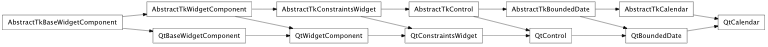
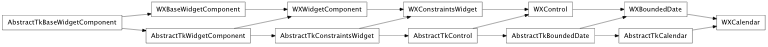

Bases: enaml.components.bounded_date.BoundedDate
A calendar widget.
A Calendar displays a Python datetime.date using an appropriate toolkit specific control.
Triggered whenever the user clicks or changes the control from the ui, but not programmatically. The event payload will be the date on the control.
Triggered whenever the user activates a new date via double click or pressing enter on the ui. The event payload will be the date on the control.
Overridden parent class trait
alias of __NoInterface__

Bases: enaml.backends.qt.qt_bounded_date.QtBoundedDate, enaml.components.calendar.AbstractTkCalendar
A Qt implementation of Calendar.

Bases: enaml.backends.wx.wx_bounded_date.WXBoundedDate, enaml.components.calendar.AbstractTkCalendar
A wxPython implementation of Calendar.